Traffic cameras as metric sensors
Tachymetry converts the video of a fixed traffic camera into road-user trajectories on the ground plane, in metres, with speeds, headings and counts per class. It detects road users with UrbanOmniDetect-2, which also predicts the eight projected corners of a 3D cuboid for each one, calibrates the camera from those cuboids and from the road markings in the image, associates detections with gates in metres, and repairs, smooths and filters each track before export. On the 31 s public sample clip, detection, calibration and tracking take 27 s on one GPU and produce 44 tracks: 31 cars (13 of them parked), 2 buses, 2 cyclists and 9 pedestrians.
Try it
Install from GitHub and run the demo. It downloads the public sample clip, calibrates the camera, tracks the road users and writes tracks, a calibration preview and an annotated video.
pip install git+https://github.com/mkturkcan/tachymetry
tachymetry demoCamera view and bird's-eye view
Every track is a sequence of footprint centres on the ground plane. The camera view draws each road user as a metric 3D box with its speed and a ground trail; the bird's-eye view draws the same instant on the orthorectified, traffic-free background, oriented with the camera looking up. Parked vehicles are drawn in grey without a speed.
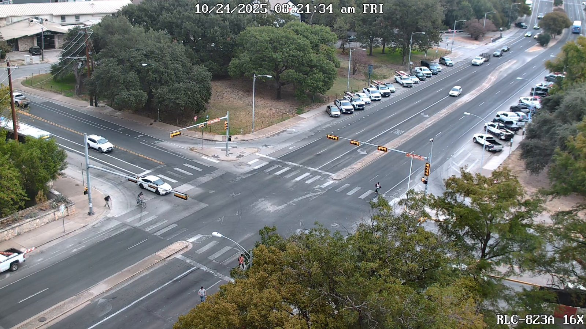
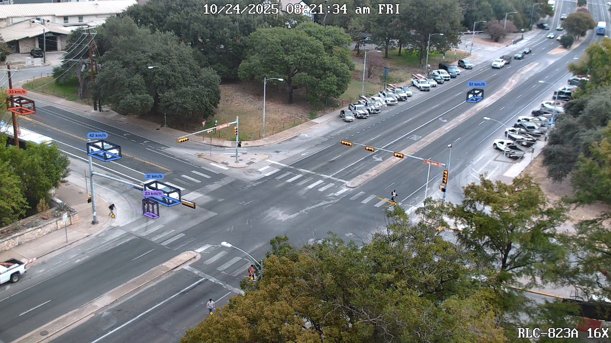
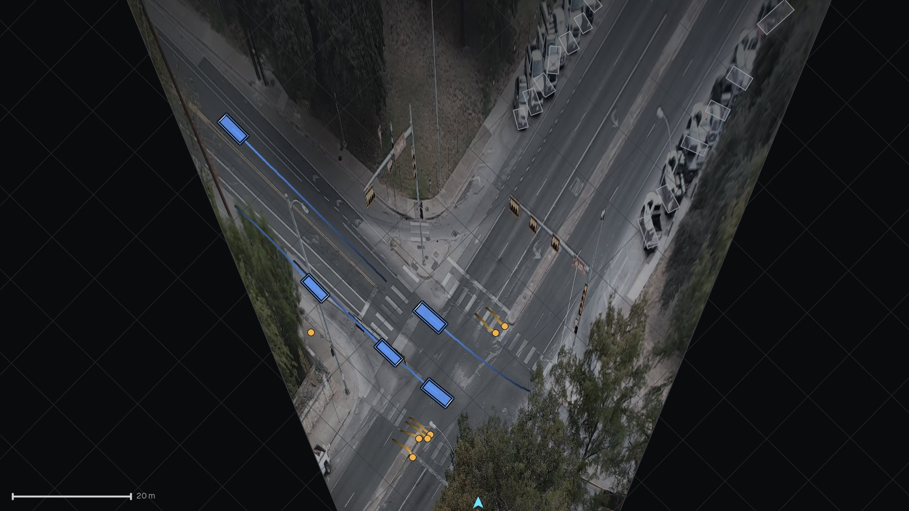
Eight public sample clips
Tachymetry registers eight public clips that tachymetry demo --sample <name> downloads and processes. Five are recordings of one signalised intersection. The other three are a roundabout seen from a hovering drone, a motorway seen from an overpass, and dense mixed traffic at a roundabout filmed straight down from a drone. Each still is the camera-view render of one run. The straight-down clip uses a camera derived from the flight altitude and the lens's field of view (drone footage); the others are calibrated automatically. Licences, credits and per-clip results are listed on the sample page.
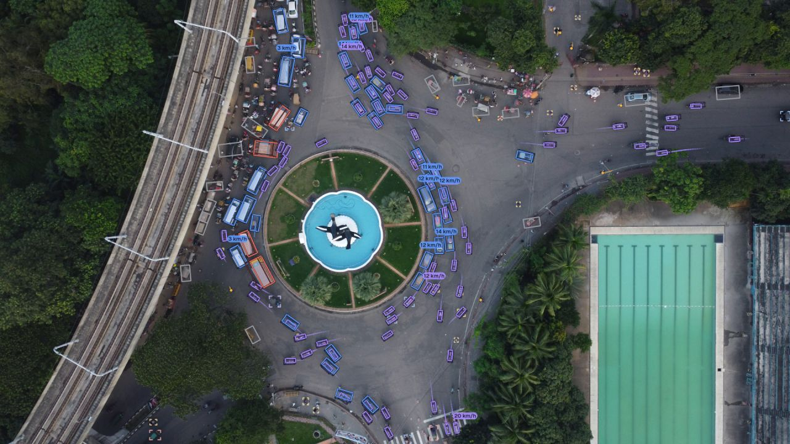
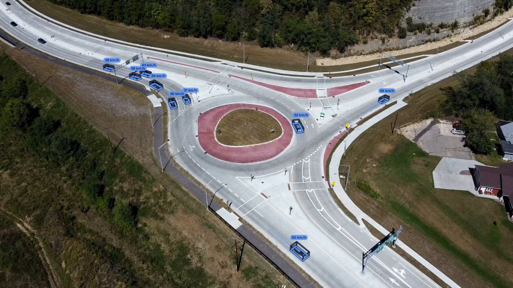
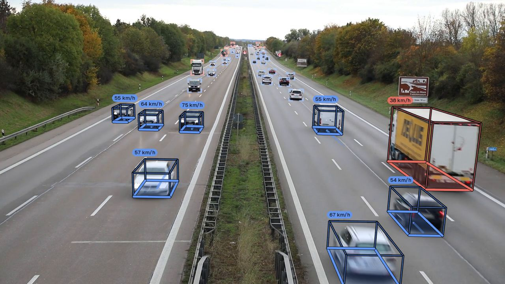
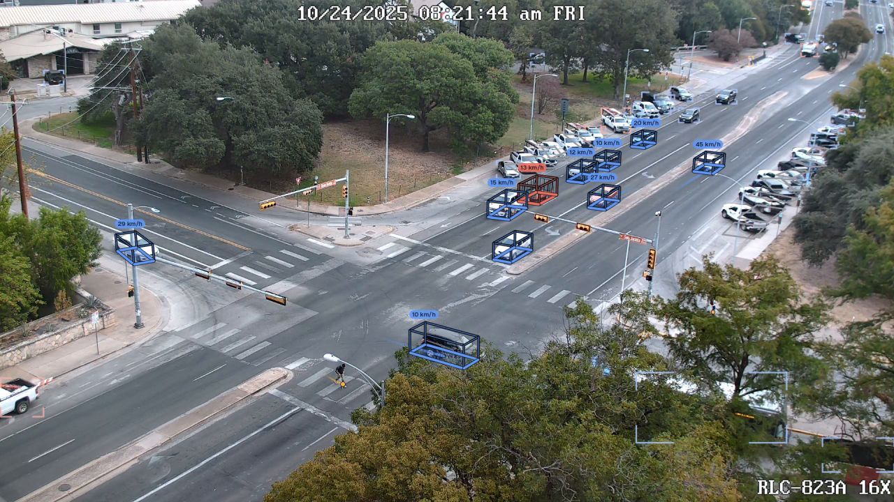
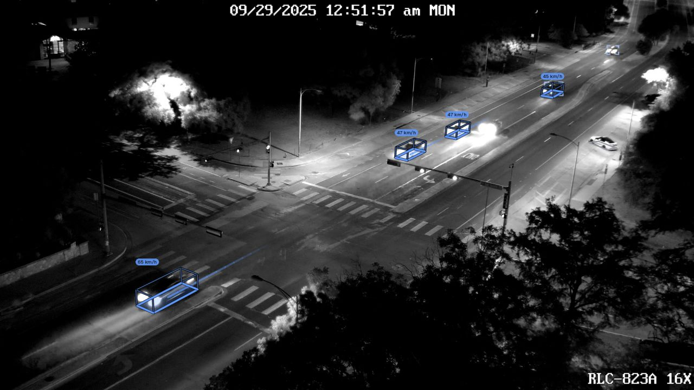
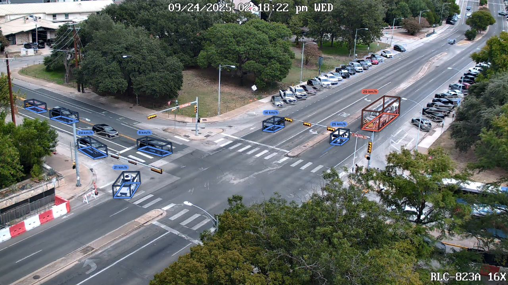
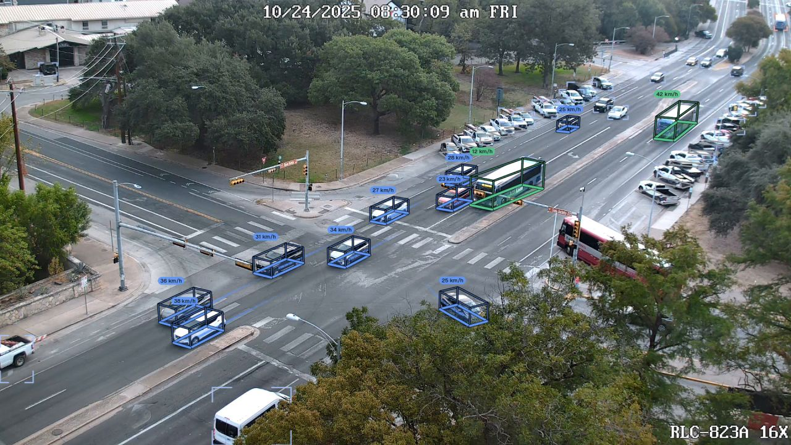
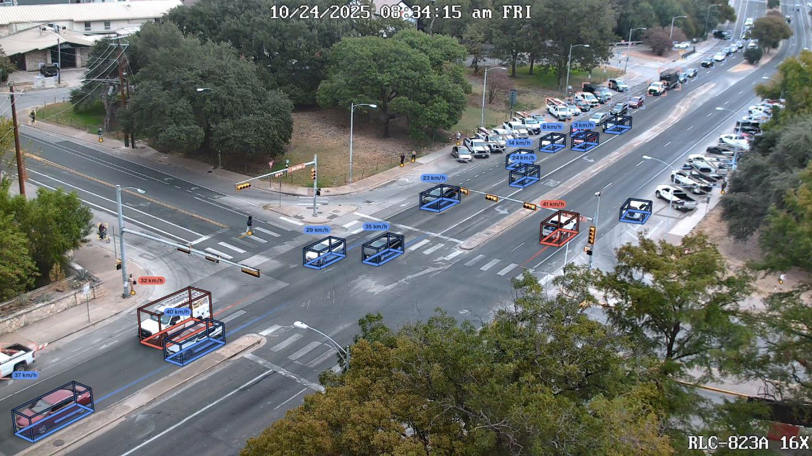
Camera calibration
Metric output needs the focal length, pitch, roll, height and lens of the camera. Tachymetry estimates them from what the video contains: the ground footprints of passing vehicles, the vanishing points of painted markings and vertical structures, and, optionally, monocular metric depth with road segmentation. A fused maximum-likelihood estimate combines footprints and vanishing points, and the metric scale follows from the size distribution of passenger cars when no height or distance is given. When an orthophoto, a site plan or GPS points are available, a browser picker collects correspondences for manual calibration with a cross-validated lens model.
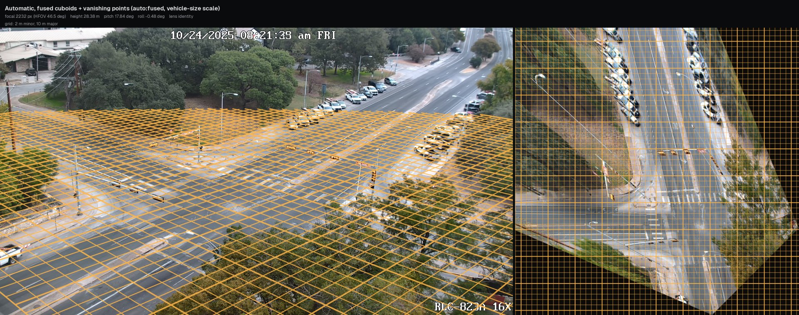
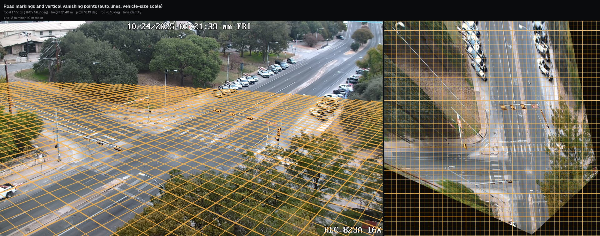
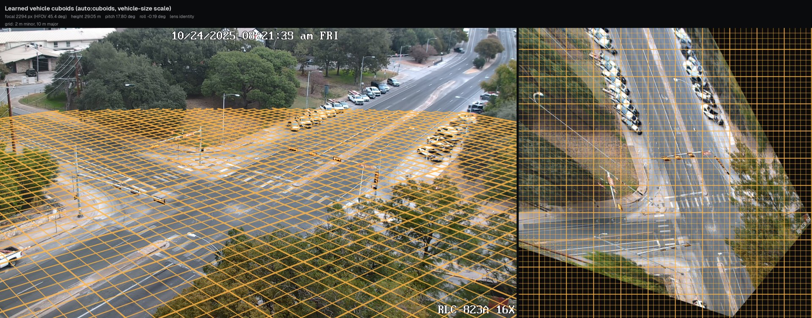
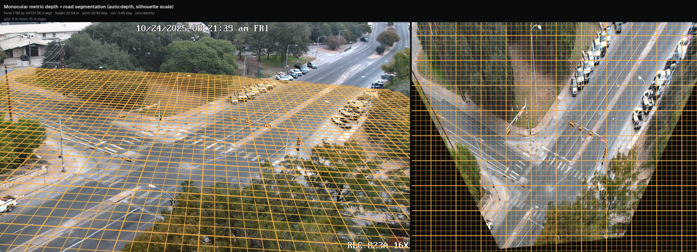
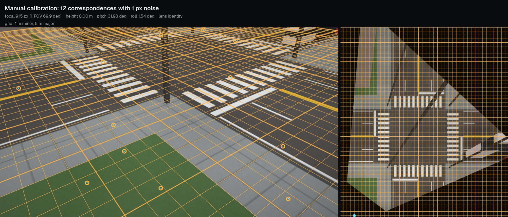
Track filtering
A detector with a frame-to-frame tracker reports speeds on parked cars, swaps identities, follows boxes cut off by the image border and keeps false positives. Tachymetry measures footprint centres instead of box bottoms, splits tracks at identity switches, trims truncated ends, repairs outliers, smooths with gap-aware zero-phase filters, freezes stopped and parked vehicles, rejects physically impossible tracks, stitches fragments, and marks duplicates, passengers, riders, shadows and ghosts, including static low-confidence parked-vehicle hallucinations.
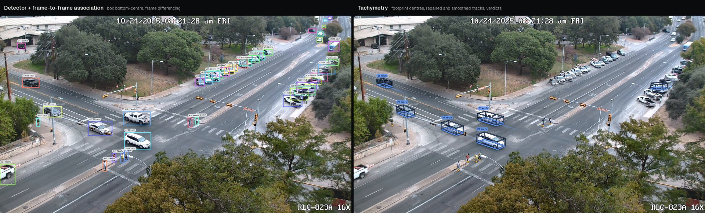
| Synthetic camera and variant | Position error, median (m) | Speed MAE (km/h) | Speed p95 (km/h) | ID switches | Parked phantom speed p90 (km/h) | False tracks |
|---|---|---|---|---|---|---|
| Pole: 8 m high, 32° down, 70° HFOV | ||||||
| Bottom-centre, frame differencing | 1.39 | 11.93 | 35.79 | 547 | 42.20 | 12.33 |
| Tachymetry | 0.04 | 0.87 | 3.98 | 6.33 | 0.00 | 0.33 |
| Mast: 18 m high, 22° down, 50° HFOV | ||||||
| Bottom-centre, frame differencing | 1.90 | 13.68 | 38.62 | 633 | 40.10 | 8.67 |
| Tachymetry | 0.03 | 0.46 | 1.92 | 10.67 | 0.00 | 0.00 |
Lens rectification
Wide surveillance lenses bend straight kerbs and lane lines, and the error grows towards the image border, where distant traffic is. Tachymetry's recommended model is a one-parameter equidistant-to-pinhole mapping about the image centre. Its single parameter s is the fisheye focal length in pixels, and s → ∞ is the pinhole. The mapping is monotone over the whole image, so it does not fold back outside the region where it was fitted as higher-order polynomials such as Brown–Conrady can, and it has no separate focal length because the ground-plane camera absorbs it. Automatic calibration estimates it, and the division model, from vanishing-point consistency and keeps the better one; manual calibration selects the lens model by cross-validation.
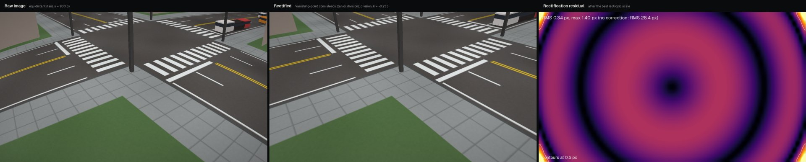
s = 900 px. Left to right: raw image, rectified image, residual of the rectification against the known lens.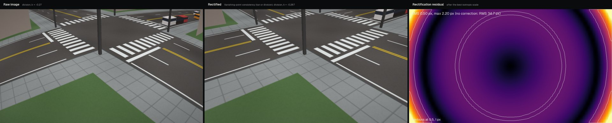
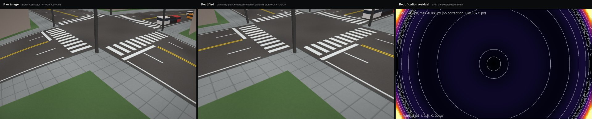
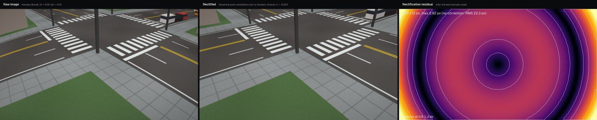
Each synthetic scene is rendered through a known lens; the residuals of each estimator are tabulated in the lens rectification example and the models are derived in lens models.
Command line and Python
Thresholds are expressed in seconds or metres, so one configuration applies across frame rates and resolutions. Settings can be overridden from the command line with --set key=value or in Python with keyword arguments.
Command line
# public sample clip, end to end
tachymetry demo
# all videos in a folder, on all available GPUs
tachymetry run videos/ --render
# calibrate once, reuse for the whole camera
tachymetry calibrate auto clip.mp4 -o camera.json
tachymetry calibrate lines clip.mp4 --lens tan \
--scale height=8.5 -o camera.json
tachymetry run clip.mp4 --camera camera.json \
--formats csv,geojsonPython
import tachymetry as tm
run = tm.track("clip.mp4", out="runs/clip", render=True)
print(run.summary()) # counts, parked vs moving, speeds
df = run.tracks.to_dataframe() # one row per sample, metres
moving = df[(df["class"] == "car") & (df.state == "moving")]
print(moving.groupby("track_id").speed_kmh.median())
cal = tm.calibrate("clip.mp4", method="lines",
scale="height=8.5")
cal.save("camera.json")Batch processing on multiple GPUs
tachymetry run and tm.track_many accept files, folders and glob patterns. A scheduler starts one worker process per slot with the spawn start method, pins each worker to one GPU through CUDA_VISIBLE_DEVICES, dispatches the longest videos first and aggregates progress in the parent. A failing video is recorded with its traceback and does not stop the batch, and finished videos are skipped when the command is run again.
Worker plan
From tachymetry devices and tachymetry.batch.plan_workers.
| CUDA GPU | 1 per 6 GB free, at most 2 |
| Apple GPU (MPS) | 1 |
| CPU only | 1 per 4 threads |
| Outputs per video | tracks, summary, camera, preview |
| Batch summary | batch_summary.csv, .json |
Trailer
Citation
@software{turkcan2026tachymetry,
author = {Turkcan, Mehmet Kerem},
title = {{Tachymetry}: Clean Metric Trajectories, Speeds and Counts from Traffic-Camera Video},
year = {2026},
url = {https://github.com/mkturkcan/tachymetry}
}